Ders 8
İndis Teorisi
Şimdiye kadar yerel metotlarla ilgilendik, mesela lineerizasyon. Lineerizasyon bir sabit noktanın sonsuz küçük uzaklıktaki çevresine bakıyordu. Kıyasla İndis Teorisi tüm faz portresine bir bütün şekilde bakabilir ve bu bütün hakkında bilgi verebilir.
İndis Teorisi nedir? Ondan önce, indis nedir? Bu arada birazdan göreceğimiz kavramlar topoloji dersini almış olanlara tanıdık gelebilir. Ya da kompleks analiz dersi aldıysanız sargılanan sayılar (winding numbers) kavramı ile alakalar var, ya da artık teorisi (residue theorem) ile bağlantılar var. Bunların hepsi topolojik kavramlar. Fizikte elektrikte Elektrostatik için Gauss'un Kanunu'nu hatırlatabilir.
Kapalı eğri $C$'nin indisi ile başlayalım, $C$ basit bir kapalı eğri, basit demek kendisiyle kesişmiyor demek. Örnekler altta, soldaki basit sağdaki değil.
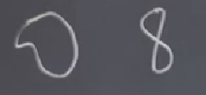
Bu kapalı eğrileri faz uzayının içine koyacağız, ve o vektör alanının eğriden nasıl dışarı çıktığına bakarak, faz uzayı hakkında bilgi toplamaya uğraşacağız. Basit kapalı eğrilerin kendisi de bir dinamik sistemin kapalı gidiş yolu olabilir, ama bu gerekli değil, ve çoğunlukla olmazlar. Ayrıca sabit nokta içinden geçmeyecek şekilde onları tasarlarız (ama kapalı eğri içindeki bölgede sabit nokta olabilir).
Kapalı eğrileri elekstrostatikte, ya da sıvı mekaniğindeki Gaussian yüzeyine benzetebiliriz; onları vektör alanına koyarız, ve bu sayede alanda ne olduğu anlamaya uğraşırız.
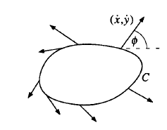
Üstte bir örnek. Bir kapalı eğriyi vektör alanına koyduk, ve o eğri üzerindeki bir $x,y$ noktasından doğal olarak bir vektör dışarı çıkıyor olacak, bu vektör $\dot{x},\dot{y}$ ile tanımlı. Bu vektörün açısına bakabiliriz, ona $\phi$ diyelim.
$$ \phi = \tan^{-1} \bigg[ \frac{\dot{y}}{\dot{x}} \bigg] $$
Bizim ilgilendiğimiz eğrinin etrafında saat yönünün tersine doğru bir tur atmak; bunu yaparken herhangi bir noktadan başlıyoruz ve tüm geçtiğimiz noktalardaki vektörlerin açısına bakıyoruz, ve bu vektörlerin açılarının değişimini gözlemliyoruz; sıra halinde bakılınca bu açılar kaç tane tam tur yapmış olurlar? Üstteki resimlerde eğri üzerinde bazı örnek vektörler gösterilmiş.
Formel olarak $C$ üzerindeki her $\underline{x}$ noktasında, eğri etrafında saat yönü tersinde bir kez dönerken $\phi$ sürekli olarak değişir. Eğer $\dot{x},\dot{y}$ $\underline{x}$'in sürekli bir fonksiyonu ise (ki vektör alanını hep pürüzsüz olarak farz ettik), o zaman $\phi$ de $\underline{x}$'in sürekli bir fonksiyonu olacaktır. $[\phi]_C$ bu gidiş sırasında $\phi$'nin net değişimi [yani tüm değişimlerin toplamı] olsun. O zaman
$$ I_c = \frac{1}{2\phi} [\phi]_C $$
$C$'nin vektör alanı $(\dot{x},\dot{y})$'ye göre indisidir.
Örnek
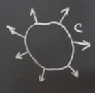
Üstteki gibi bir eğri çizdik, ve herhangi bir noktadan başlayarak (en sağdaki ok mesela) saat yönü tersine gidiyoruz, ve başladığımız yere dönüyoruz. Bu sırada açılar tam bir tur atmış olurlar. O zaman $[\phi]_C = 2\pi$, yani $I_C = +1$.
Eğer hala zihnimizde canlandıramıyorsak, hareket sırasındaki üzerinden geçilen bazı vektörleri numaralayabiliriz,
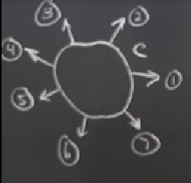
ve onları çıkış noktaları aynı nokta olacak şekilde tekrar çizeriz,
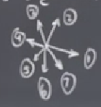
1,2,3 diye giderken tam bir tur atmış olduk.
Soru
İndis kavramının bir vektör alanının curl'ü ile bir bağlantısı var mı?
Cevap
Curl bir vektörün yerel rotasyonu hakkında bize bir şeyler söyler evet, curl ile indis arasında matematiksel bağlantılar da var, bazı entegral teorileri üzerinden, ama unutmayalım curl tek bir noktada tanımlıdır, indis ise bir eğri üzerinde tanımlı, yani indis curl'e göre daha global bir kavram.
Bir başka örnek görelim şimdi; mesela
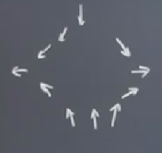
Değişik bir görüntü bu; tüm bu okları kapsayan bir kapalı eğri çizmek kolay olmayacak ama şöyle bir şekil çizeyim,
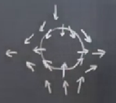
Şimdi parmağımı en sağdaki okla aynı hizaya getireyim, ve saat yönü tersine giderken parmağımın ne yaptığına bakayım. İlginç bir şey olacak, hareket saat yönü tersi ama ok yönlerinin gidişatı saat yönünde.
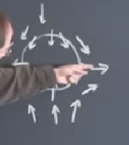 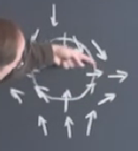 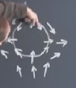 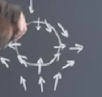 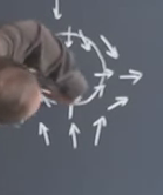
En son karede görüldüğü gibi dönüş açısı elle gösterirken beni şekilden şekilde soktu ama dönüş yönü hakikaten böyle absürt; eğri üzerinde saat yönü tersi ama okların dönüşü saat yönünde.
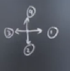
Buradaki indis $I_c = -1$, çünkü dönüş tam tersi yönde.
Ya alttaki gibi bir akış olsaydı?
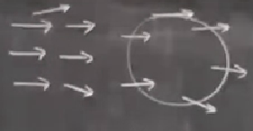
Tam düz sağa doğru akış var, sadece akışın en üstünde ve en altında birer ok biraz sapmışlar, biri daha üste biri aynı derecede daha alta. Bu akış üzerinde üstte sağdaki gibi bir eğri çizseydim, ve dönüş sırasında okları takip etseydim, net dönüşün 0 olduğunu görecektim, $I_c = 0$.
Başlangıç örnekleri olarak bunlar yeterli herhalde. Şimdi indislerin bazı matematiksel özelliklerini geliştireceğim, bu özellikler bize dinamik sistem analizinde yardım edecek şeyler, tek bir indis sayısı hesaplamaktan daha fazlası var yani.
Özellikler
Ufak bazı teoriler vereceğim şimdi, bazen ispatsız, bazen kaba hatlarla, genel bir fikir verecek şekilde.
1) Kapalı bir gidiş yolunun indisi: bu teori "ya kapalı eğrinin kendisi de bir gidiş yolu ise, ne olur?" sorusunu soruyor. Yani kapalı eğriyi çiziyoruz ve vektörlerin hepsi eğriye teğet.
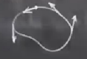
Bu durum eğer eğrinin kendisi de gidiş yolu olsaydı meydana çıkardı. Böyle bir durumda dönüşte okları takip edersek eğri etrafındaki dönüş sırasında oklar aynen kapalı eğri gibi tam bir tur atmış olacaktır, ve 1. özellik (ve onunla ilgili teori) der ki kapalı bir gidiş yolunun indisi her zaman 1 olmalıdır. İspatsız veriyoruz.
Kapalı gidiş yollarıyla ilgileniyoruz çünkü onlar periyotsal hareketleri temsil ediyorlar.
Soru
-1 sonucunu da elde edebilir miydik?
Cevap
Hayır; kapalı bir gidiş yolu var ise sonuç her zaman +1 olmalı. İspat için gayrı-Lineer diferansiyel denklemler hakkında Jordan ve Smith tarafından yazılmış kitaba bakılabilir, daha fazla referanslar benim kitabımda var.
2) İndislerin eğri $C$'nin parçaları üzerinde toplanır (additive) olabilme özelliği var.
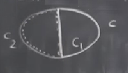
Diyelim ki bir eğri $C$ var. Onu ortasından dik bir çizgi çekerek iki parçaya bölüyorum, $C_1$ ve $C_2$ (düz çizgi her iki parçaya da ait). Bu eğrilerin üzerinde yine saat yönü tersine giderek indisi hesaplasaydım, $I_C = I_{C_1} + I_{C_2}$ olduğunu görürdüm. İspatın ana fikri şöyle, mesela $C_1$'in indisini hesaplıyorum, ve ortadaki düz bölüm üzerinden geçerken oradaki vektörler üzerinden $\phi$'deki net değişimi hesaplıyor olacağım, fakat o çizgi üzerinde net değişim ne ise, $C_2$ için aynı hesabı yaparken $C_1$ hesabı sırasında gittiğim yönün tam tersine gidiyor olacağım için o net değişimin etkisini tamamen yoketmiş olurum! Yani toplarken bölen çizgideki hesap iki parça için birbirini yokeder, geriye sadece eğrilerin indis hesapları kalır.
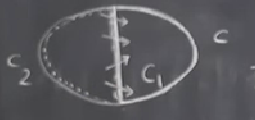
3) Eğer $C$ süreklilik bozulmayacak ve bir sabit nokta içinden geçmeyecek şekilde yamultulursa (deform), yeni hal $C'$'in indisi $C$ ile aynıdır.
Bu özellik elektrostatikte Gauss'un kanunu hakkında bize bir fikir verebilir aslında; bir Gaussian yüzey var ve onun içinden olan akıyı (flux) hesaplıyoruz. Bu durumda Gauss'un kanunundan biliriz ki akı içeride olan yüke (charge) bağlıdır, yüzeyi yamultuyorum ama bu yamultmayı hiç yük kaybetmeyecek şekilde yapıyor isem akıyı değiştirmemiş olurum. Benzer durum, eğrinin yerini değiştirmek indiste değişim yaratmaz.
Bu özelliğin neredeyse tam bir ispatını vereceğim. Pür teorik matematik derslerinde birazdan göstereceğim türden argümanları çok görürsünüz, çok çekici şeyler, ve o kadar basitler ki bazen insan şaşırıyor, ispat bu kadar basit mi diye? Fakat hakikaten ispat bu kadar basit.
İspat
$I_C$'nin $C$'ye sürekli bir şekilde bağlantılı olduğunu biliyoruz. Bu ne demek? Eğer $C$ üzerinde ufak bir değişim / yamultma yapsaydım, bu sürekli bir şekilde indis hesabı için baktığım $\phi$'lere yansırdı, çünkü eğrinin üzerinde olduğu vektör alanı sürekli.
Süreklilikten bahsettik ama $I_C$ bir tamsayı. Bunu nereden biliyoruz? Çünkü indis hesabı için belli bir yöndeki oku (vektörü) baz alarak başladık, ve tekrar aynı oka geri döndük. Bu dönüş sırasında eğri üzerinde bir dönüş yaptık, ve aynı yöne döndüysek ya birkaç kere döndük, ya bir kere döndük, ya da hiç dönmedik; ama net değişim muhakkak bir dönüşün tamsayılı bir katı olmalı, kesirsel (reel bir sayıya bağlı) bir kat olamaz, çünkü vektör alanı süreklidir. O zaman şu sonuca varıyoruz, eğer elimizde tamsayı sonucu olan bir sürekli fonksiyon var ise bu fonksiyon bir sabit olmalı. Yani $I_C$, ki $C$'nin bir fonksiyonu, $C$'yi değiştirirken sabit kalmalı, $I_C = I_{C'}$.
Tamsayı değerli fonksiyonları yamultma üzerinden görsel örnekte görelim;
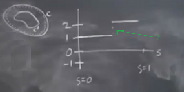
Diyelim ki $S$ parametresi $C$'yi ne kadar yamulttuğumuzu kontrol ediyor, $x$ ekseninde sağa gittikçe o oranda $C$'yi yamultmuş oluyoruz (resimde soldaki eğri). Ve diyelim ki yamulta yamulta $S=1$'e geldik, o noktada büyük $C$ onun içindeki $C'$ haline geldi. Bunun yansıması resimde sağdaki grafik üzerinde neye benzer? Yamultma olurken tamsayı 1 seviyesindeyiz, sonra... bir noktada 2 olabilir miyiz? Bunun için bir "zıplama" gerekir, ama bu zıplama bir fonksiyonun sürekliliğine aykırıdır. Bu kadar. Bu da olamayacağına göre tam sayı çıktılı bir sürekli fonksiyonun varlığı bu fonksiyonun sabit olduğu anlamına gelir.
Bu arada yamultma sırasında sabit nokta içinden geçmeme şartını nasıl kullandık? Bu şarta uyulmalı çünkü tam sabit nokta üzerinde üzerinden $\phi$ hesaplayacağımız vektör nedir? Sıfırdır. Bu tür durumlarda indis tanımlı olamayacağı için sabit noktalara girmiyoruz.
4) Diyelim ki $C$ içinde hiç sabit nokta yok. Bu durumda $I_C = 0$ olmalıdır.
İspat için bir $C$'yi düşünelim, onu küçülte küçülte tek bir nokta seviyesine getiriyorum, o anda $C$'den çıkan vektörlerin hepsi aynı yönü gösteriyor olmalılar, bunu vektör alanının sürekliliğinden biliyorum. Ufacık bir kapalı eğri içinde vektörlerin tam bir dönüş yapma şansı yoktur, o zaman içinde sabit nokta olmayan ufacık bir $C'$ için $I_{C'} = 0$ olmalı, o zaman, biraz önce gördüğümüz 3. özellik yüzünden $I_C$ de sıfır olmalı.
5) İndisin bize sabit noktaların stabilitesi hakkında bilgi verebileceği düşünülebilir, fakat bu doğru değil, arada hiç bağlantı yok. Daha formel şekilde tarif edelim; diyelim ki zamanı tersine çevirdik, $t \to -t$ oldu, vektör alanındaki tüm oklar 180 derece tersine döndü (ya da $\dot{\underline{x}} \to -\dot{\underline{x}}$ oldu). Bu demektir ki her noktada $\phi$ eklenir, $\phi \to \phi + \pi$ olur, ama bu ekleme $[\phi]_C$'de, yani $\phi$'nin net değişimi üzerinde hiçbir etki yaratmaz, çünkü her şeye $\pi$ ekledim, bu ekler net değişim hesaplanırken iptal olacaktır. Demek ki zamanı tersine çevirmek indisi etkilemez.
Sabit noktanın stabilitesi hakkında bilgi alamayız, eğer zamanı tersine çevirseydim eğri içindeki stabil nokta gayrı-stabil hale gelirdi, ama bu durum indisi etkilemezdi, evet, indisler sabit nokta stabilitesi hakkında bir şey söylemez, ama sabit noktaların türü hakkında birşeyler söyleyebilir. Mesela düğüm (node) sabit noktasının indisi her zaman +1, eyer (saddle) düğümünün indisi her zaman -1'dir (düğümün stabil mi gayrı stabil mi olduğu fark etmiyor, 5. özellik yüzünden).
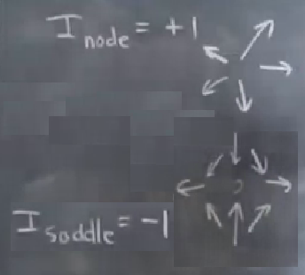
Devam edersek, sarmal (spiral) için +1, merkez (center) için yine +1.
Sabit nokta olmayan herhangi bir nokta için indis her zaman sıfırdır. Çünkü o noktanın içinden vektörler sadece geçip gidiyor olabilirler, bu durumda, sadece tek bir yöne gidildiği bir durum var, indis sıfır.
Tüm bunları hatırlamak için daha önce lineerizasyonda kullandığımız iz, determinant diyagramları faydalı olabilir.
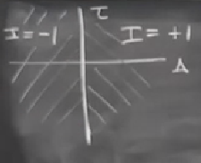
Sağ bölgede indis her zaman 1, merkezler, düğümler, sarmallar orada yaşıyor. Sol bölgede indis her zaman -1, eyerler burada. Tam yatay eksen üzerinde, hatırlarsak, lineerizasyonda izole olmayan sabit noktalar vardı, bu bölgede indis hesaplanamıyor, çünkü elimizde izole olan sabit nokta yok, bu sebeple sadece o noktayı kapsayacak şekilde bir kapalı eğri çizmemiz mümkün değil, yani indis hesaplamamız mümkün değil.
Soru
2'den büyük ya da -2'den küçük indis değerine sahip bir sabit nokta olabilir mi?
Cevap
Şimdiye kadar gördüğümüz sabit nokta sınıflamaları için değil ama, evet, bu değerleri verebilecek tür sabit noktalar var. Mesela dinamik sistem $\dot{x} = z^n$, ki $z = x + iy$, yani kompleks bir sayı var, ve bu sistemin vektör alanına bakarsak böyle durumları görebiliriz, mesela $\dot{z} = z^2$, o zaman $\dot{x} + i\dot{y} = x^2 + y^2 + i(2xy)$. Buna tekabül eden vektör alanı,
$$ \dot{x} = x^2 - y^2 $$
$$ \dot{y} = 2xy $$
Bu sistemin lineerizasyonu tamamı sıfır olan bir matris olurdu, lineerizasyonun hiçbir şeyden haberi yok, sistemi orijinde zannediyor ve orada sabit noktalardan oluşan bir düzlem var zannediyor. Fakat bu doğru değil. Orijinde tek bir sabit nokta var, vektör alanına baksak ve indis hesaplasak değeri +2 (ya da -2, tam hatırlayamıyorum, ama ikisinden biri).
Ya da bir diğer örnek, fizikte ikili kutup (dipole) problemleriyle uğraşanlar bu tür sistemleri görürler, mesela vektör alanı şöyle ise,
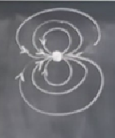
indis değeri 2 çıkar (ya da -2). Üstteki türden bir dinamik sistem bu derste görmedik ama tabii ki böyle sistemler var.
Neyse devam edelim,
Teori
$\mathbb{R}^2$'deki her kapalı gidiş yolunun içinde muhakkak sabit nokta(lar) vardır, ve bu noktaların indisinin toplamı +1 olmalıdır, $\sum_{k=1}^{n} I_k = 1$.
Belki bazılarınız böyle bir sonuç çıkabileceğini tahmin etmiştir; mesela iki kuyulu titreşiri düşünürsek,
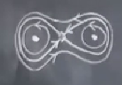
Sağda ve solda merkez, tam ortada eyer düğümü vardı, indisler sağda solda +1, ve ortada bir -1.
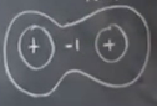
Eğer en dıştaki kapalı gidiş yolunu düşünürsek ve ona göre indis hesaplarsak içeride +1, +1 ve -1 var, toplam +1. Ve bu kapalı gidiş yolunun indisi hakikaten +1. Peki nasıl böyle oldu? 3. özellik yüzünden. Eğer kapalı eğriyi üç parçaya bölsek,
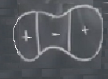
Tüm eğri indisi için o parçaları toplayabilirdik, ve üstteki örnek için +1 değerini elde ederdik.
Bu çok güzel bir teori çünkü kapalı bir gidiş yolu içinde neler olabileceğine kısıtlamalar getiriyor (ve bizim analizlerimize kolaylaştırma sağlıyor). Bu teorinin güzel bir diğer tarafı, mesela bazen elimizde bir dinamik sistem oluyor ve düşünüyoruz ki bu problemde kapalı gidiş yolları yok, ama emin değiliz, ve biraz önce gördüğümüz türden argümanları kullanarak kapalı gidiş yolu varlığını hemen devre dışı bırakabiliyoruz.
Örnek
Tavşan vs koyun problemine dönelim;
$$ \dot{x} = x(3 - x - 2y) $$
$$ \dot{y} = y(2-x-y) $$
Ortada bir eyer düğümü vardı, eksenlerde düğümler, orijinde gayrı stabil düğüm. Peki bu resimde nasıl kapalı bir yörünge ortaya çıkardı?
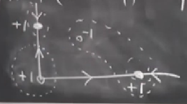
Üstteki görülen noktalı çizgiyle gösterdiklerimizin hiçbiri mümkün değil; orijin etrafındaki olmaz çünkü gidiş yolları kesişemez. Sağdaki iki sabit noktayı kapsayan olmaz çünkü indis toplamı sıfır (+1 olmalıydı). Sol üstteki, aynı şekilde, gidiş yolu kesişmesi. Sadece ortadaki nokta etrafındaki de olmaz, orada indis -1 değerinde. Herhalde ana fikri anlatabiliyorum, bu problemde kapalı yörünge yok, ve bunu indis teorisini kullanarak hemen anladık.
Soru
Kapalı bir yörünge içinde hiç sabit nokta olmaması mümkün değil mi?
Cevap
Hayır. Daha önce demiştik ki 1. özelliğe göre kapalı gidiş yollarının indisi +1 olmalı. O zaman içerideki sabit noktaların indisinin toplamı +1 olmalı, eğer içeride hiç sabit nokta yoksa, sabit nokta olmayan noktaların indisi sıfır olduğu için toplam da sıfır olurdu, ve bu kapalı gidiş yolunun indisinin 1 olma kuralına ters düşerdi.
Bu noktada İndis Teorisi hakkında söyleceklerim bitti.
Bir sonraki bölüme atlıyoruz şimdi; 7. bölüm.
Limit Çevrimleri (Limit Cycles)
Bunlar çok önemli izole, kapalı gidiş yolları. İzole derken limit çevrimlerin yanındaki gidiş yolları kapalı değil demek istiyorum. Yani mesela merkezlerden farklı olarak, ki bu durumda faz portrelerinde merkez yakında pek çok çeşit kapalı eğri oluyordu, bir dış gidiş yolu içinde bir sarmal olabiliyor,
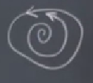
Üstteki gibi. "Limit" kelimesinin nereden geldiği görülüyor herhalde, üstteki resimde dışarıdaki eğri içerideki sarmal için bir tür "limit". Sonuşurda (asymptotically) ona yaklaşıyor. Tipik olarak dışarıda bir tane daha eğri olur, o da limit çevrimine yaklaşır,
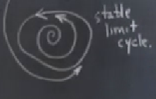
Bu duruma "yaklaşılan" şeye stabil limit çevrimi (stabil limit cycle) ismi veriliyor. Gayri stabil olanları da var,
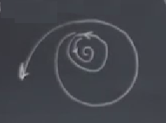
Bu durumda ortadaki limit çevrimi dışındaki gidiş yolu ondan uzaklaşıyor.
Nadir de olsa marazi (pathalogical) durumlar oluyor tabii, yarı stabil limit çevrimler, dışarıdan gayrı stabil içeriden stabil.
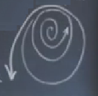
Peki limit çevrimleriyle niye ilgileniyoruz? Onlar, mesela stabil limit çevrimleri, sistemin yapmak istediği periyotsal bir gidişi temsil ediyor, yani pek çok farklı başlangıç konumundan o çevrime doğru bir yöneliş / çekim var. Eğer sistem bir tür kalıcı salınıma doğru meyil ediyorsa, büyük bir ihtimalle o sistemin arka planda stabil bir limit çevrimi vardır.
Pek çok farklı bilim alanında limit çevrimleri ortaya çıkar; biyolojide mesela kalbin çarpması ve onu kontrol eden biyoelektrik sistemi bir limit çevrimine göre ayarlıdır. Ya da gün içinde aşağı ve yukarı inen çıkan vücut ısımız limit çevrimine bağlıdır. Mühendislikte kontrol sistemlerindeki geribesleme bir diğer örnek, isteniyorlarsa iyi tabii ama bazen istenmeyen şekilde ortaya çıkıyorlar, mesela uçakta giderken kanatlara bakın, bir titreme varsa uçak spesifikasyonlarının belirttiğinden daha hızlı uçurulduğunda aşağı yukarı hareket ederler. Bunu yapmamaları gerekir, uçak uçaktır, kuş değil, kanatlarını çırpmasına gerek yok.
Ya da köprülerin sallanması. Ya da pencere güneşlikleri; aralarından tutarlı bir hızda bir rüzgar esiyor ve bakıyorsunuz güneşlik takırdamaya başlıyor. Sabit bir güç etki ediyor, yani periyotsal bir etki yok, sabit etki var, ama birdenbire güneşlik salınıma giriyor. Pek çok örnek.
Son bir nokta: lineer sistemlerde limit çevrimleri olmaz, çünkü limit çevrimlerinin özü gayrı lineer. Lineer sistem derken ben bu terimi başkalarından biraz farklı kullanıyorum, $\dot{\underline{x}} = A \underline{x}$, ki $A$ içinde sabit katsayılar olan bir matris. Bu tür bir sistem var ise orada limit çevrimi olamaz. Kapalı yörünge olabilir, ama bu yörüngeler izole olmayacaktır. Bu tür sistemlerde periyotsal çözümler izole olmaz. Eğer $x(t)$ periyotsal bir çözüm ise $c x(t)$ de periyotsal bir çözümdür.
Yani elimde bir çözüm varsa (alttaki resimde en içerideki kapalı eğri),
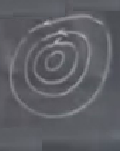
o zaman o çözümü bir sabitle çarparak / ölçekleyerek bir sürü diğer çözümleri de elde edebilirim (tüm dış kapalı eğriler).
Üstteki durum limit çevrimi değil, çünkü sistemdeki ufak bir gürültü bizi bir eğriden diğerine atabilir, ve sistem sonsuza kadar o yolda kalacaktır. Fakat limit çevriminde eğer bir düzenini bozma durumu (disturb) var ise tekrar geri dönersiniz. Yani bu tür sistemler daha sağlamdır (robust).
Ödevler
Soru 3.1.3
Alttaki ödev sorusu için niteliksel olarak farklı olan tüm vektör alanlarını $r$'nin değişimi üzerinden taslaksal olarak çizin. Başta ne olduğunu bilmediğimiz kritik bir $r$ değerinde eyer düğümü çatallaşması olduğunu gösterin. Ve en son olarak çatallaşma diyagramını $x^\ast$ ve $r$'li olacak şekilde taslaksal çizin.
$$ \dot{x} = r + x - \ln(1+x) $$
Cevap
Her ne kadar $\dot{x}=0$'i çözmek problemli olsa da, $r$ için çözmek $r=\ln(1+x)+x$ sonucunu veriyor. $\ln(1+x)$ formülü $x \ge 1$ değerleri üzerinden tanımlı olabilir sadece. $x \to -1$ ya da $x \to \infty$ olduğu durumda $r \to -\infty$ olur. O zaman $r>0$ için hiçbir sabit nokta yoktur. $r<0$ için $x=-1$'e yaklaşan sabit nokta stabildir, diğeri gayrı stabildir.
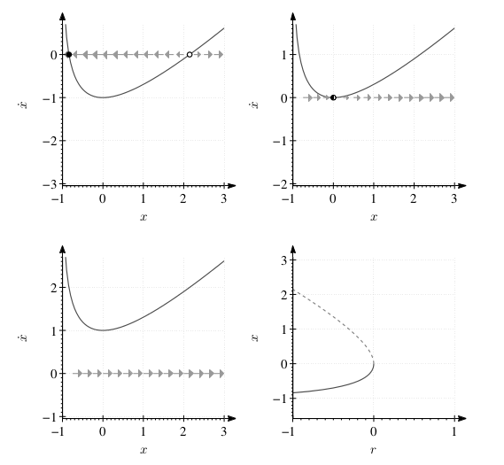
Üstteki grafiklerde sağ alttaki hariç tüm diğerleri $\dot{x} = r+x-\ln(1+x)$'in faz uzayı. Üst solda $r=-1$, üst sağda $r=0$, alt solda $r=1$, alt sağda $\dot{x} = r+x-\ln(1+x)$'in çatallaşma diyagramı.
Soru 3.2.2
Alttaki soru için $r$ değiştikçe ortaya çıkacak tüm niteliksel olarak farklı vektör alanlarını taslaksal olarak çizin. Kritik bir $r$ değerinde transkritik çatasllaşma olduğunu gösterin. Çatallaşma diyagramını $x^\ast$ ve $r$'li olacak şekilde taslaksal çizin.
$$ \dot{x} = rx - \ln(1+x) $$
Cevap
Burada bir sabit nokta $x_1=0$ üzerinde hareket ediyor, ve bu nokta $r<1$ iken stabil. Ama $r=1$ olunca $x=\infty$'da ikinci bir sabit nokta ortaya çıkıyor, $r=1$'de gayrı stabilden stabile dönüşüyor. Bu noktada $\dot{x}$ $x=f(r)$'e transform edilemez, bu sebeple olanları tarif etmek için $r =\frac{\ln(1+x)}{x}$ kullanıldı. $r\to\infty$ iken stabil nokta $x=-1$'e yaklaşır.
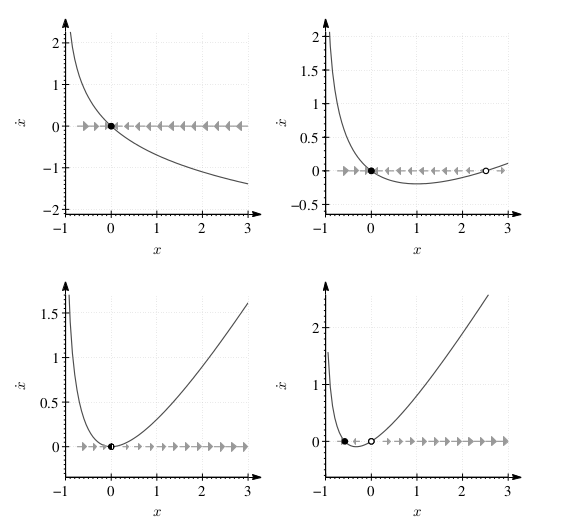
Üsttekiler faz uzayıdır. Sol üst $r=0$, sağ üst $r=0.5$, sol alt $r=1$, sağ alt $r=1.5$.
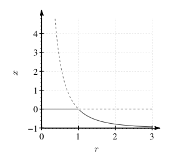
Üstteki ana formülün çatallaşma diyagramı.
Soru 3.4.6
Bu soru farklı çatallaşmalar arasındaki farkı görebilmeniz için hazırlandı, çünkü farklı tipleri birbirine karıştırmak çok kolay! Alttaki soruda hangi $r$ değerinde çatallaşma olduğunu bulun, ve eğer mi, transkritik mi, süperkritik tırmık mı, yoksa altkritik tırmık mı bunu bulun. Son olarak çatallaşma diyagramını $x^\ast$ ve $r$'li olacak şekilde taslaksal çizin.
$$ \dot{x} = rx - \frac{x}{1+x} $$
Denklemi faktorize edince sabit noktaların, $r \ne 0$ olduğu zaman, $x^\ast=0$ ve $x^\ast=(1/r)-1$ üzerinde olacağını görmek oldukça kolay. Alttaki $x^\ast,r$ bazlı çizilen figürde
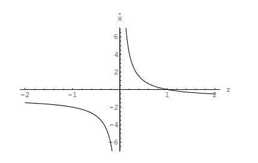
bir transkritik çatallaşma olduğunu görüyoruz. Kontrol etmek için eğer $\dot{x}=f(x)$ ise $f'(x) = r - (1+x)^2$ olduğuna dikkat edelim. $x^\ast=0$ olduğu zaman önceki ifade $f'(x) = r-1$'e dönüşür. Bunun anlamı sabit noktanın $r<1$ niçin gayrı stabillikten $r>1$ için stabilliğe doğru değişeceğidir (türevin o noktadaki işaretinden bunu anlayabiliyoruz). Bu demektir ki $r_c = 1$ noktasında bir transkritik çatallaşma var. Diyagramı altta.
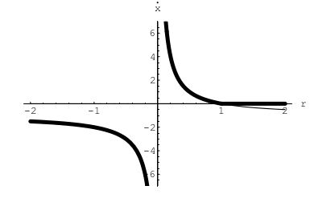
Soru 3.4.14
$\dot{x} = rx + x^3 - x^5$ sistemini düşünelim ki bu sistem altkritik tırmık çatallaşmasına sahip.
a) $r$ değişirken ortaya çıkacak tüm sabit noktaların cebirsel ifadesini bulun.
b) $r$ değişirken ortaya çıkan vektör alanlarını taslaksal çizin. Tüm sabit noktaları ve onların stabilitesini göstermeyi unutmayın.
c) Eyer düğümü çatallaşması sırasında sıfır olmayan sabit noktaların doğduğu $r_s$ noktasını hesaplayın.
Cevap
a) Sabit noktalar $x^\ast=0$, ve $r + x^2 - x^4$'ün çözümleri
$$ x^\ast = \pm \sqrt{ \frac{1}{2} \pm \sqrt{r + \frac{1}{4}} } $$
Dört tane mümkün işaret $\pm/\pm$ seçimi için dört tane basit olmayan sabit nokta var. $r<-1/4$ olduğu zaman bu dört noktanın hiçbiri mevcut değil, hepsi $r=-/14$ noktasındaki eyer düğümü çatallaşması sırasında yaratılıyorlar.
b)
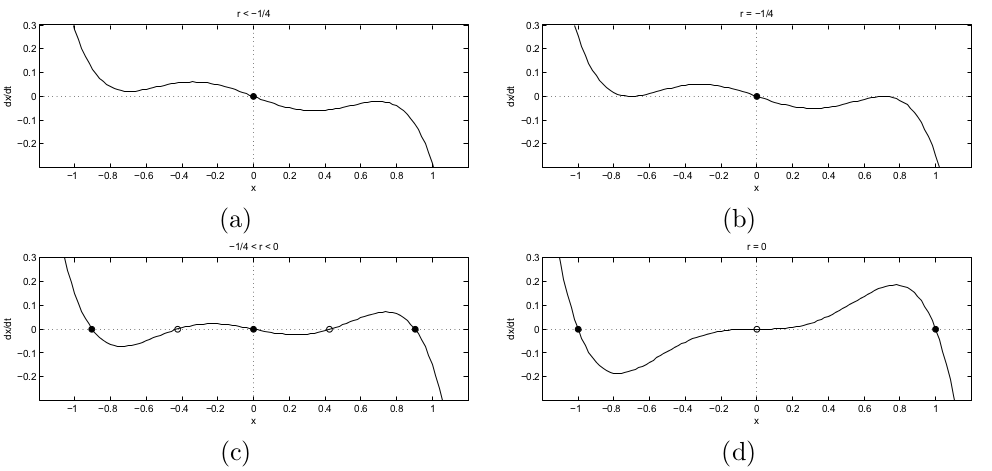
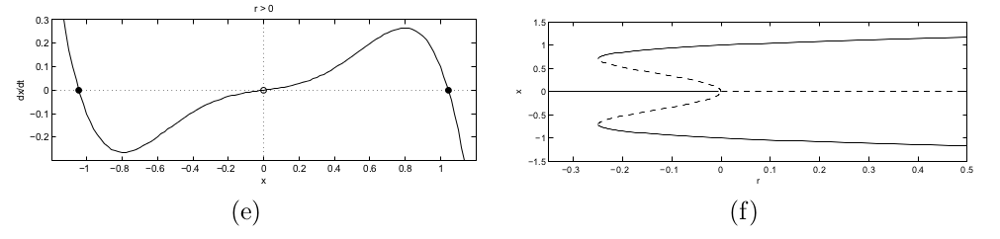
(a) figüründe $r<-1/4$ için tek stabil nokta. (b) $r=-1/4$'te eyer düğüm çatallaşması, $x=0$ stabil, ortaya yeni çıkan $x - \pm 1/\sqrt{2}$ noktaları yarı-stabil. (c) $-1/4 < r < 0$ (d) $r=0$'da altkritik tırmık çatallaşması. (e) $r>0$ için bir gayrı stabil bir stabil sabit nokta. (f) altkritik tırmık çatallaşması için çatallaşma diyagramı, ki $r=-1/4$'te eyer düğümü çatallaşması var, ve $r=0$'da tırmık çatallaşması var. Kesiksiz çizgi stabil dalları, kesikli olan gayrı stabil dalları temsil ediyor.
c) a) cevabında basit olmayan sabit noktaların formülünde görüldüğü üzere (ikili) eyer düğümü çatallaşması $r=-1/4$'te. Ya da dinamik sistemi şu şekilde yazarsak,
$$ \dot{x} = rx + x^3 - x^5 = x \bigg( (r+\frac{1}{4}) - (x^2 - \frac{1}{2})^2 \bigg) $$
bu formülde bariz olarak görülüyor ki sabit noktalar $r=-1/4$ olduğu zaman $x = \pm 1/\sqrt{2}$'de doğuyor.
Soru 3.7.5
Zebraların şeritleri ve kelebeklerin kanatlarındaki şekiller biyolojik şekillerin, kalıpların oluşmasının en müthiş iki örneği. Bu kalıpların nasıl oluştuğunu açıklayabilmek biyolojinin çözülmeyi bekleyen en büyük problemlerinden, bilimcilerin şu ana kadar bildiklerini [1] çok güzel anlatıyor. [2] araştırmasında Lewis ve arkadaşları bu kalıbın oluşmasındaki öğelerden birini bir biyolojik subap olarak düşündü, biyokimyasal sinyal maddesi $S$ bir gen $G$'yi aktive ediyordu. Modellerine göre gen normal olarak etkin olmayan (inactive) bir halde olabilir, ama $S$'in konstrasyonu belli bir seviyeyi aştıktan sonra bir pigment ya da gen ürünü üzerinden aktif hale getirilir. $g(t)$ bu gen ürününün konstrasyonu olsun, ve $S$'in konstrasyonu $s_0$ seviyesinde sabitlenmiş. Model şöyle,
$$ \dot{g} = k_1s_0 - k_2g + \frac{k_3 g^2}{k_4^2 + g^2} $$
$k$'ler pozitif değerli sabitler. $g$'nin üretilmesi $k_1$ hızında $s_0$ tarafından tetiklenir, ve aynı $g$'nin üzerinde $k_2$ oranı üzerinden bir azalış ta mevcuttur. Bu azalış bir otokatalitik (autocatalytic), ya da pozitif bir geribildirim (feedback) süreci üzerinden olmaktadır, modelde gayrı lineer terim üzerinden gösterilir.
a) Sistemin boyutsuz bir forma geçirebileceğini göster, alttaki gibi
$$ \frac{dx}{d\tau} = s - rx + \frac{x^2}{1+x^2} $$
b) Eğer $s=0$ ise $r<r_c$ için iki tane pozitif sabit nokta $x^\ast$ olduğunu göster ($r_c$ sonradan hesaplanacak).
c) Farz et ki başta hiç gen ürünü yok, yani $g(0) = 0 $, ve yine farz et ki $s$ yavaş yavaş sıfırdan arttırılıyor (aktivasyon sinyali açılmış). $g(t)$'ye ne olur? $s$ tekrar sıfıra döndürülürse ne olur? Gen kapatılmış konuma geri mi döner?
d) Çatallaşma eğrileri için $(r,s)$ uzayında parametrik formülleri bul, ve ortaya çıkacak çatallaşmaları sınıfla.
e) Bilgisayarı kullanarak sayısal olarak doğru $(r,s)$ uzayında olan stabilite diyagramını grafikle.
Konu hakkında daha fazla detay [1,2,3]'te bulunabilir.
Cevap
a)
$x=\frac{g}{G}$, $\tau=\frac{t}{T}$ olsun, o zaman $\frac{dg}{dx} = G$, ve $\frac{d\tau}{dt} = \frac{1}{T}$ olacaktır. Bu demektir ki,
$$ \frac{dg}{dt} = \frac{dg}{dx}\frac{dx}{d\tau}\frac{d\tau}{dt} = \frac{G}{T}\frac{dx}{d\tau} $$
Eğer ana diferansiyel denklemimize dönersek, bu denklem alttaki halde tekrar yazılabilir,
$$ \frac{dx}{d\tau} = \frac{Tk_1s_0}{G}-\frac{Tk_2}{G}(Gx) + \frac{T}{G} \frac{k_3(Gx)^2}{k_4^2 + (Gx)^2} $$
$$ = s - rx + \frac{k_3T}{G} \frac{x^2}{(\frac{k_4}{G})^2 + x^2} $$
ki $s = \frac{Tk_1s_0}{G}$ ve $r = Tk_2$'dir.
Biz $\frac{k_3T}{G} = 1$ ve $\frac{k_4}{G} = 1$ olsun istiyoruz ki $G=k_4$ ve $T = \frac{k_4}{k_3}$ olsun. Ayrıca
$$ s = \frac{k_4}{k_3}\frac{k_1s_0}{k_3} = \frac{k_1s_0}{k_3}$$
ve
$$ r = \frac{k_4}{k_3}k_2 = \frac{k_2k_4}{k_3} $$
Ve nihayet diferansiyel denklemi şu şekilde tekrar yazıyoruz,
$$ \frac{dx}{d\tau} = s - rx + \frac{x^2}{1+x^2}$$
b) $s=0$ oldugunda
$$ \frac{dx}{d\tau} = - rx + \frac{x^2}{1+x^2}$$
formülü sabit noktaları verir. Açık bir şekilde görülüyor ki bu formülün $x=0$'da bir çözümü vardır, ve tüm formülü $x$'e böleriz, böylece bu çözümü unutmayacağımızı garanti etmiş oluruz. Sonuç denklem $rx^2 - x + r = 0 $ olarak yazılabilir. Bu denklem ünlü karesel formül ile çözülebilir,
$$ x = \frac{1 \pm \sqrt{1-4r^2}}{2r} $$
Bu formül bize $r<1/2$ için iki tane reel ve pozitif kök verecektir.
c)
Alttaki figürden görülebileceği üzere $r<1/2$ için sadece bir tane stabil sabit nokta olduğunu buluyoruz. Grafik birkaç farklı $s$ için $x-s$ ile $x^2/1+x^2$ üzerinden basıldı.
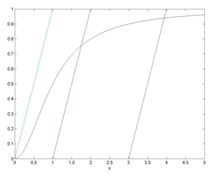
Fakat, ufak $s$ ve $r<1/2$ için 3 tane sabit nokta olduğunu buluyoruz. Bir tanesi sigmoid'in alt ucuna doğru ve stabil, öteki sigmoid'in ortalarına doğru ve gayrı stabil, üçüncüsü ise sigmoid'in üst sağ yarımında ve stabil. $s$ arttırıldıkça ilk iki sabit nokta biraraya geliyorlar ve birbirlerini yokediyorlar, geriye sadece üçüncü kalıyor. Bu davranış alttaki grafikte,
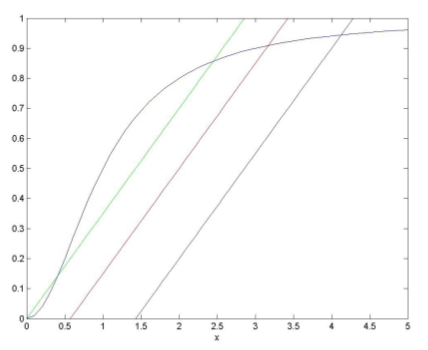
Yani $r>1/2$ için $s$ değiştikçe gen seviyelerinin yukarı aşağı çıkıp inmesini bekleriz. Fakat $r<1/2$ için $s$ arttıkça gen seviyeleri de artacak. Gen seviyesinin eğri üzerinde ne kadar üstte olduğuna bağlı olarak $s$ azalırken bu seviye ya gayrı stabil noktanın altında ya da üstünde takılı kalacak. Yani sinyalleme maddesi olmasa bile gen üretimi aktif edilmiş halde kalır.
d)
Eyer düğümü çatallaşmaları $f(x)=0$ ve $f'(x)=0$ iken ortaya çıkar.
$$ \frac{dx}{d\tau} = s - rx + \frac{x^2}{1+x^2}=0 $$
ve
$$ \frac{d^2x}{dxd\tau} = - r + \frac{(1+x^2)2x-x^2(2x)}{(1+x^2)^2} = 0$$
için alttakiler olur,
$$ rx - s = \frac{x^2}{1+x^2} $$
$$ r = \frac{(1+x^2)2x-x^2(2x)}{(1+x^2)^2} = \frac{2x}{(1+x^2)^2}$$
Bunları ana formüle geri sokup $s$ için çözersek,
$$ s = rx - \frac{x^2}{1+x^2} = \frac{x^2-x^4}{(1+x^2)^2} $$
Özet olarak
$$ r_c = \frac{2x}{(1+x^2)^2} $$
ve
$$ s_c = \frac{x^2-x^4}{(1+x^2)^2} $$
e)
Üstteki iki fonksiyonu $x$ parametresi üzerinden grafiklersek,
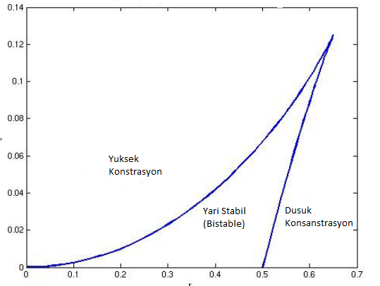
Grafikte biyokimyasal aç / kapa düğmesinin hangi bölgelerde açık ve gen üretiminin yüksek konsantrasyonda olduğunu, nerede açık / kapalı pozisyonlar arasında gidip geldiğini, ve düğmenin nerede kapalı ve gen ürününün konstrasyonunun düşük olduğunu görüyoruz.
Kaynaklar
[1] Murray, Mathematical Biology, 1989
[2] Lewis, Slack, Wolpert, Thresholds in development, Theor. Biol. 65, sf. 579, 1977
[3] Edelstein-Keshet, Mathematical Models in Biology